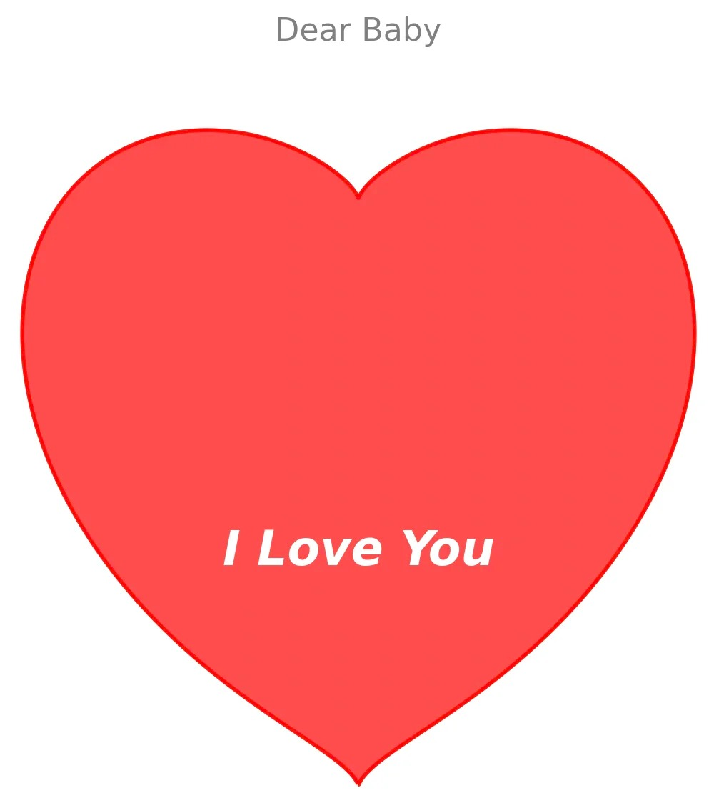
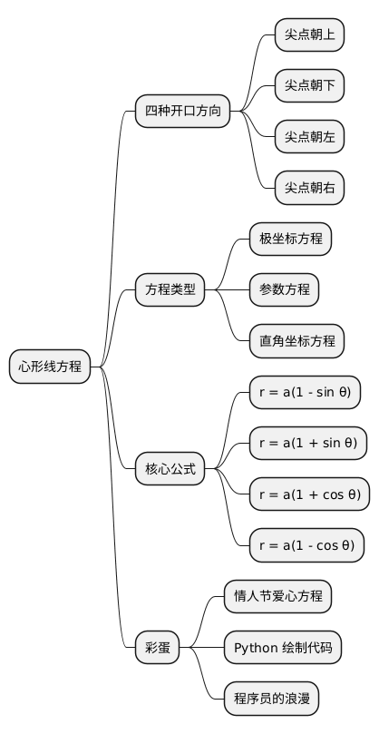

数学之美：四种心形线方程汇总
Posted on 二 06 1月 2026 in Life
| Abstract | Journal on 2026-01-06 |
|---|---|
| Authors | Walter Fan |
| Category | math |
| Status | v1.0 |
| Updated | 2026-01-06 |
| License | CC-BY-NC-ND 4.0 |
数学之美：四种心形线（Cardioid）方程汇总
作为数学领域的“老司机”，这里为大家总结心脏线（Cardioid）在四个方向上的方程。
在数学上，标准的心脏线是由一个圆沿着另一个半径相同的圆滚动时，圆周上一点的轨迹形成的。它的形状像一个圆润的桃子或肾脏，有一个尖点（Cusp）（即心形的凹陷处）。
为了方便说明，我们设常数 $a > 0$（控制大小）。
以下是四种开口方向（以尖点/凹陷朝向为准）的方程汇总：
1. 尖点朝上（开口向上，形状像桃子/常规爱心）
这是最接近大众认知的“爱心”形状（虽然底部是圆的）。
- 极坐标方程： $$r = a(1 - \sin\theta)$$
- 参数方程（$\theta$ 为参数）： $$\begin{cases} x = a(1 - \sin\theta)\cos\theta \ y = a(1 - \sin\theta)\sin\theta \end{cases}$$
- 直角坐标方程： $$x^2 + y^2 + ay = a\sqrt{x^2+y^2} \quad \text{或} \quad (x^2 + y^2 + ay)^2 = a^2(x^2 + y^2)$$
2. 尖点朝下（开口向下，形状倒置）
- 极坐标方程： $$r = a(1 + \sin\theta)$$
- 参数方程： $$\begin{cases} x = a(1 + \sin\theta)\cos\theta \ y = a(1 + \sin\theta)\sin\theta \end{cases}$$
- 直角坐标方程： $$x^2 + y^2 - ay = a\sqrt{x^2+y^2} \quad \text{或} \quad (x^2 + y^2 - ay)^2 = a^2(x^2 + y^2)$$
3. 尖点朝左（开口向左，主体在右）
- 极坐标方程： $$r = a(1 + \cos\theta)$$
- 参数方程： $$\begin{cases} x = a(1 + \cos\theta)\cos\theta \ y = a(1 + \cos\theta)\sin\theta \end{cases}$$
- 直角坐标方程： $$x^2 + y^2 - ax = a\sqrt{x^2+y^2} \quad \text{或} \quad (x^2 + y^2 - ax)^2 = a^2(x^2 + y^2)$$
4. 尖点朝右（开口向右，主体在左）
- 极坐标方程： $$r = a(1 - \cos\theta)$$
- 参数方程： $$\begin{cases} x = a(1 - \cos\theta)\cos\theta \ y = a(1 - \cos\theta)\sin\theta \end{cases}$$
- 直角坐标方程： $$x^2 + y^2 + ax = a\sqrt{x^2+y^2} \quad \text{或} \quad (x^2 + y^2 + ax)^2 = a^2(x^2 + y^2)$$
🎁 彩蛋：更像“情人节爱心”的方程
标准心脏线底部是圆的，没有尖尖的尾巴。如果你想要画出那种底部尖尖的、顶部凹陷的完美爱心，可以使用这个著名的直角坐标隐函数方程：
$$(x^2 + y^2 - 1)^3 - x^2y^3 = 0$$
它的形状更加修长、完美，常用于表白代码中。
💻 程序员的浪漫：用 Python 画一颗爱心
光有公式还不够，动手画出来才更有诚意。这里有一段 Python 代码，使用 matplotlib 库绘制上述那个完美的爱心方程。
import numpy as np
import matplotlib.pyplot as plt
# 设置绘图区域
x = np.linspace(-1.5, 1.5, 1000)
y = np.linspace(-1.5, 1.5, 1000)
X, Y = np.meshgrid(x, y)
# 心形方程: (x^2 + y^2 - 1)^3 - x^2*y^3 = 0
Z = (X**2 + Y**2 - 1)**3 - X**2 * Y**3
# 创建画布
plt.figure(figsize=(8, 8), facecolor='white')
# 绘制填色图，Z <= 0 的区域即为心形内部
plt.contourf(X, Y, Z, levels=[-np.inf, 0], colors=['#ff4d4d'])
# 绘制轮廓线
plt.contour(X, Y, Z, levels=[0], colors='red', linewidths=2)
# 添加浪漫文字
plt.text(0, -0.2, "I Love You", fontsize=24, color='white',
ha='center', va='center', fontweight='bold', style='italic')
# 隐藏坐标轴
plt.axis('off')
plt.title("Code My Love", fontsize=16, color='gray')
plt.show()
你可以把这段代码发给 TA，或者运行生成图片发过去。祝表白成功！

@startmindmap
* 心形线方程
** 四种开口方向
*** 尖点朝上
*** 尖点朝下
*** 尖点朝左
*** 尖点朝右
** 方程类型
*** 极坐标方程
*** 参数方程
*** 直角坐标方程
** 核心公式
*** r = a(1 - sin θ)
*** r = a(1 + sin θ)
*** r = a(1 + cos θ)
*** r = a(1 - cos θ)
** 彩蛋
*** 情人节爱心方程
*** Python 绘制代码
*** 程序员的浪漫
@endmindmap

本作品采用知识共享署名-非商业性使用-禁止演绎 4.0 国际许可协议进行许可。